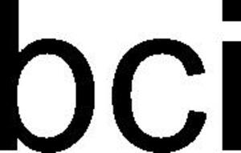

Trade Mark Journal No.2025/052 26 December 2025
WO0000001876088 (3,9,20,22,23,24,25,27,31,35,40,41,42)
Office of origin: Switzerland
Date of International Registration:25 May 2025
Date of designation in the UK:
25 May 2025

International priority date claimed: 26 November 2024
(Switzerland)
(825206)
- Class 3
- Non-medicated toiletry preparations and cosmetic products; perfumery products, essential oils; bleaching preparations and other substances for laundry use; cleaning, polishing, degreasing and abrasive preparations; cotton wool for cosmetic use; cotton balls for cosmetic use; cotton buds for cosmetic use.
- Class 9
- Scientific, research, navigation, surveying, photographic, cinematographic, audiovisual, optical, weighing, measuring, signaling, detecting, testing, inspecting, life-saving and teaching apparatus and instruments; apparatus and instruments for conducting, switching, transforming, accumulating, regulating or controlling electricity distribution or use; apparatus and instruments for sound, image or data recording, transmission, reproduction or processing; recorded and downloadable media, software, blank digital or analog recording and storage media; cash registers, calculating devices, computers and computer peripherals; application software; downloadable electronic publications; electronic labels for goods, encoded labels for barcodes; encoded cards, encoded smart cards; barcode readers, barcode readers; electronic tracking apparatus and instruments.
- Class 20
- Furniture, mirrors, picture frames; transport or storage containers not of metal; unworked or semi-worked bone, horn, whalebone or mother-of-pearl; shells; meerschaum; yellow amber; mattresses; pillows.
- Class 22
- Ropes and strings; nets; tents and tarpaulins; awnings of textile or synthetic materials; sails; large-capacity bags for the transport and storage of materials in bulk; padding and stuffing materials, excluding paper, cardboard, rubber or plastic materials; raw fibrous textile materials and their substitutes; cotton fibers; raw cotton; cotton wadding and cotton waste for padding or upholstery; cotton waste (flock) for padding and stuffing; cotton waste; cotton tow; cotton netting (raw textile material).
- Class 23
- Threads for textile use; threads; cotton threads; threads made wholly or substantially of cotton; spun cotton threads; cotton for darning; twisted cotton thread and yarn; cotton thread and yarn waste.
- Class 24
- Textiles and substitutes thereof; household linen; curtains of textile or plastic materials; cotton fabrics; knitted fabrics of cotton yarn; cotton-based mixed fabrics, silk-cotton mixed fabrics, wool-cotton mixed fabrics, hemp-cotton mixed fabrics; cotton waste fabrics; labels of textile materials; barcode labels of textile, labels of textile for identifying clothing.
- Class 25
- Clothing, footwear, headwear.
- Class 27
- Carpets, rugs, mats and matting, linoleum and other materials for covering existing floors; wall hangings, not of textile materials; mats; carpets; wallpapers; wall coverings of cloth; wall coverings of cotton.
- Class 31
- Unprocessed and non-transformed agricultural, aquacultural, horticultural and forestry products; unprocessed and raw grains and seeds; fresh fruits and vegetables, fresh aromatic herbs; natural plants and flowers; bulbs, seedlings and seeds; cottonseed.
- Class 35
- Advertising; commercial business administration, organization and management; office functions; assistance and advice regarding commercial organization and management; commercial consultancy services; commercial project management services; business process management services; business networking services; company audits (commercial analyses); providing commercial and marketing information; assistance, consultant and information services with respect to marketing; promotional services; public relations; conducting of trade fairs; organization of events, exhibitions, fairs and shows for commercial, promotional and advertising purposes; commercial intermediation services; commercial lobbying services; compilation and systematization of information into computer databases; computerized database management; data processing services; tracking of registers; analysis, research and information relating to business affairs; commercial data analysis; economic forecasting; market analysis and research services; statistical report analysis and presentation services; market research consultant services; retail or wholesale services, including online retail or wholesale services, in relation to non-medicated toiletry preparations and cosmetic products, perfumery products, essential oils, bleaching preparations and other substances for laundry use, cleaning, polishing, degreasing and abrasive preparations, cotton wool for cosmetic use, cotton balls for cosmetic use, cotton buds for cosmetic use, scientific, research, navigation, surveying, photographic, cinematographic, audiovisual, optical, weighing, measuring, signaling, detecting, testing, inspecting, life-saving and teaching apparatus and instruments, apparatus and instruments for conducting, switching, transforming, accumulating, regulating or controlling electricity distribution or use, apparatus and instruments for sound, image or data recording, transmission, reproduction or processing, recorded and downloadable media, software, blank digital or analog recording and storage media, cash registers, calculating devices, computers and computer peripherals, application software, downloadable electronic publications, electronic labels for goods, encoded labels for barcodes, encoded cards, encoded smart cards, barcode readers, barcode readers, electronic tracking apparatus and instruments, furniture, mirrors, picture frames, transport or storage containers not of metal, unworked or semi-worked bone, horn, whalebone or mother-of-pearl, shells, meerschaum, yellow amber, mattresses, pillows, ropes and strings, nets, tents and tarpaulins, awnings of textile or synthetic materials, sails, large-capacity bags for the transport and storage of materials in bulk, padding and stuffing materials excluding paper, cardboard, rubber or plastic materials, raw fibrous textile materials and their substitutes, cotton fibres, raw cotton, cotton wadding and cotton waste for padding or upholstery, cotton waste (flock) for padding and stuffing, cotton waste, cotton tow, cotton netting (raw textile material), threads for textile use, threads, cotton threads, threads made wholly or substantially of cotton, spun cotton threads, cotton for darning, twisted cotton thread and yarn, cotton thread and yarn waste, textiles and substitutes thereof, household linen, curtains of textile or plastic materials, cotton fabrics, knitted fabrics of cotton yarn, cotton-based mixed fabrics, silk-cotton mixed fabrics, wool-cotton mixed fabrics, hemp-cotton mixed fabrics, cotton waste fabrics, labels of textile materials, barcode labels of textile, labels of textile for identifying clothing, clothing, footwear, headwear, carpets rugs mats and matting linoleum and other materials for covering existing floors, wall hangings not of textile materials, mats, carpets, wallpapers, wall coverings of cloth, wall coverings of cotton, unprocessed and non-transformed agricultural aquacultural horticultural and forestry products, unprocessed and raw grains and seeds, fresh fruits and vegetables, fresh aromatic herbs, natural plants and flowers, bulbs, seedlings and seeds, cottonseed; drafting and defining third-party commercial standards; financial and accounting auditing; including all the aforementioned services provided electronically or online from a computer database or via the Internet; provision of information related to the aforesaid services; advice relating to the aforesaid services.
- Class 40
- Treatment of materials; recycling of trash and waste; air purification and water treatment; printing services; food and beverage preservation; treatment of materials, raw cotton, fibers, threads, yarns for textile use, fabrics, textiles; provision of information related to the aforesaid services; consultancy relating to the aforesaid services.
- Class 41
- Education; training; entertainment; sporting and cultural activities; preparation and hosting of colloquiums, conferences, congresses, seminars, symposiums and training workshops; education and training in the field of agriculture and distribution of training materials relating thereto; preparing and facilitating events for cultural, educational, training, scientific and entertainment purposes; preparing and conducting competitions; publication services; publishing standards, publishing industry standards; publishing educational material, and manuals; provision of non-downloadable electronic publications; including all the aforementioned services provided electronically or online from a computer database or via the Internet; provision of information related to the aforesaid services; advice relating to the aforesaid services.
- Class 42
- Scientific and technological services as well as research and design services relating thereto; industrial analysis, industrial research and industrial design services; quality control and authentication services; design and development of computers and software; installation, maintenance and updating of software; technical project planning; engineering; temporary provision of applications and software tools online; Software as a Service (SaaS); hosting of platforms on the Internet; computer Platform as a Service (PaaS); certification and validation services; services in relation to the certification of compliance with norms and standards; issuance of certificates; drafting and issuance of standards; inspection services; quality control services; monitoring compliance with standards; technological audits; testing, analysis and evaluation of third-party goods and services with a view to certification thereof; quality assurance services; surveying (engineering work); providing information and advice in relation to the certification of compliance with norms and standards; consultant services with respect to quality control; providing information and advice in relation to testing the quality of third-party products and services with a view to their certification; including all the aforementioned services provided electronically or online from a computer database or via the Internet; provision of information related to the aforesaid services; advice relating to the aforesaid services.
Better Cotton Initiative
Representative: Venner Shipley LLP, 200 Aldersgate London EC1A 4HD UNITED KINGDOM